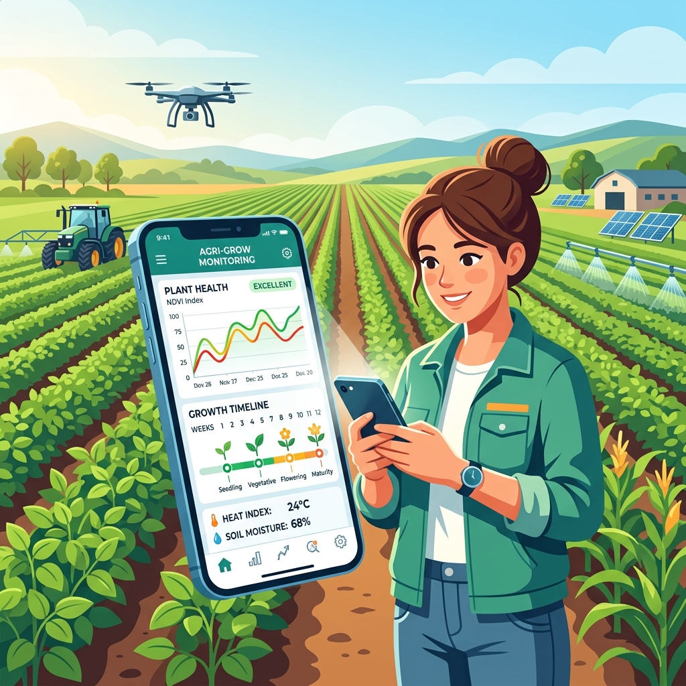

Crop Recommendation
Get 4–5 crop suggestions and budget estimate using your land details.
Choose an option below to get guidance for your farm.
Get 4–5 crop suggestions and budget estimate using your land details.

See which crops have good demand and prices in your nearby markets.

Ask any farming questions in simple language to our intelligent assistant.

Upload a crop or leaf photo to detect possible diseases.

Track your selected crop timeline, fertilizing schedule, and watering guides.